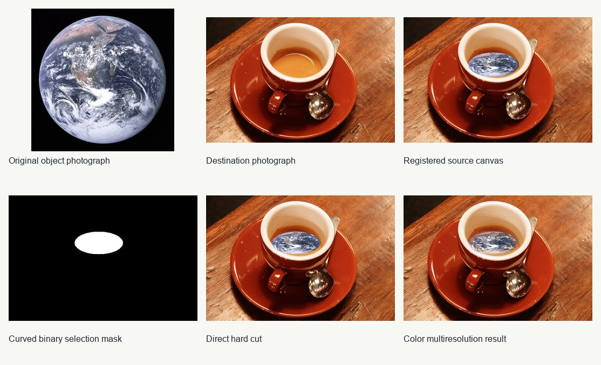
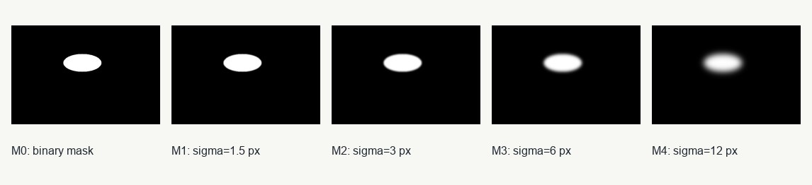
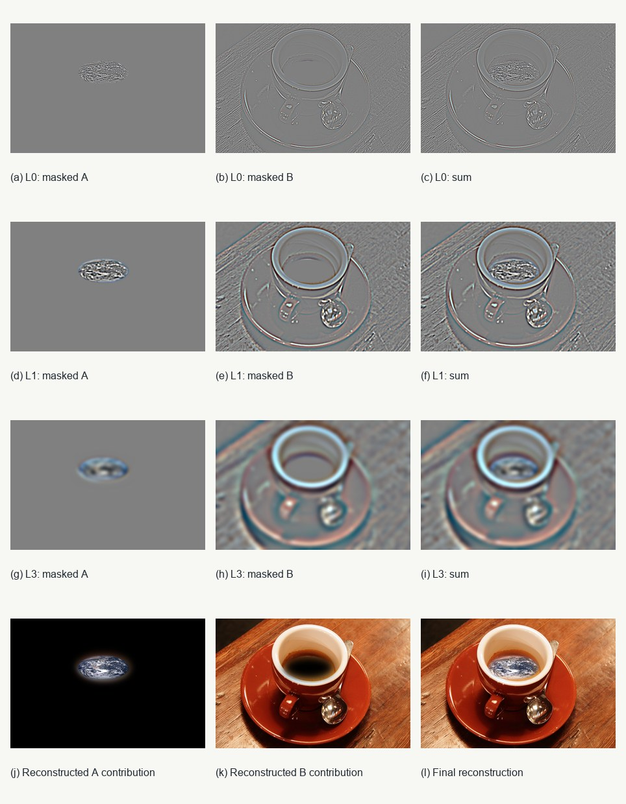
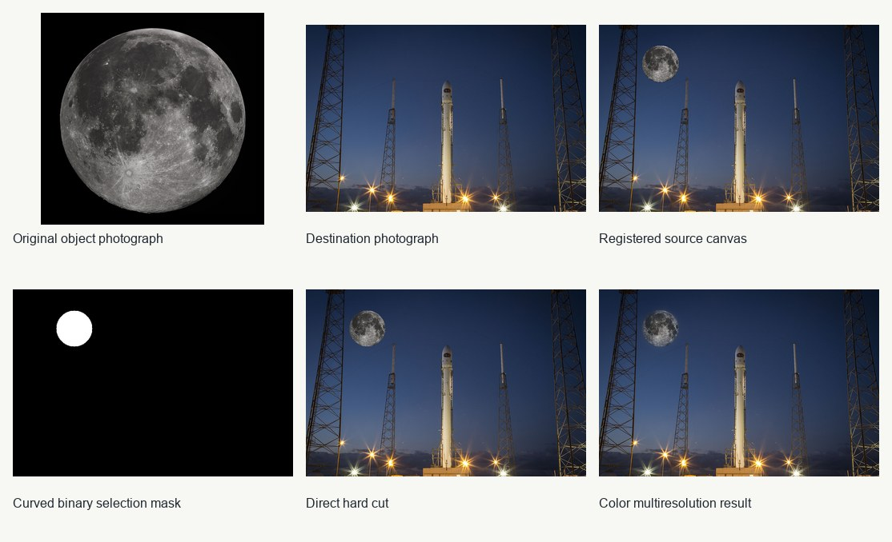
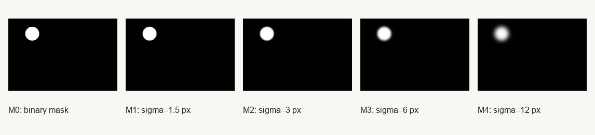
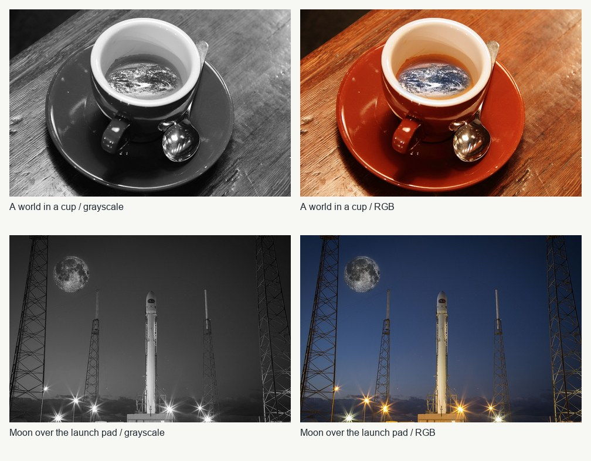

Computational photography · Fall 2026
Fun with Filters
and Frequencies
Convolution isolates edges, separates image detail by spatial scale, and combines photographs in ways that change with viewing distance. This report follows those connections through explicit implementations, numerical checks, and visual experiments.
NumPy convolution · Finite differences · Derivatives of Gaussians · HSV gradient orientations · Unsharp masking · Three hybrid images · Gaussian and Laplacian stacks · Oraple and two custom blends · Mandatory color experiments
Online report: https://mokshtrehan.github.io/syde671-assignment2/
Contents
1.1 · Convolutions from scratch
Both implementations compute true convolution: flip the kernel in both dimensions, zero-pad the image, and accumulate products. The four-loop version iterates over image rows, image columns, kernel rows, and kernel columns. The two-loop version keeps the two kernel loops and multiplies a whole shifted image slice at once. No convolution routine, FFT, window-view helper, or image-processing library is used inside either implementation.
For a kernel of height Kh and width Kw, padding before each axis is floor(K/2) and padding after it is floor((K−1)/2). This asymmetry for even kernels matches SciPy’s “same” crop convention. Testing non-symmetric odd and even kernels is necessary: a symmetric Gaussian alone would not catch an accidental correlation or a one-pixel offset.
The grayscale selfie is 384 × 512 pixels; luminance uses 0.299R + 0.587G + 0.114B on RGB values in [0,1]. The 9 × 9 average removes fine texture. Dₓ and Dᵧ emphasize changes across columns and rows respectively; the signed display has one common symmetric color scale. Zero extension visibly darkens a smoothed outer rim and can introduce false derivatives at the frame.
For a fixed 96 × 96 selfie crop/resize, the table reports the median of three timed calls after one warm-up. Every method uses float64, zero extension, and “same” output. Maximum error across all comparisons is 8.88e-16. These are measurements on this computer, not universal speed claims. Both manual methods do O(HWKhKw) arithmetic; vectorizing the image operations removes Python’s per-pixel overhead.
The boundary test uses an all-ones 25 × 25 image and a normalized 9 × 9 box. Zero fill produces 25/81 at a corner and 5/9 along an edge; symmetric and periodic extension preserve one everywhere. “Same” describes output size, not how pixels beyond the image are supplied.
| Kernel | Method | Median ms | Max |error| |
|---|---|---|---|
| 3×5 asymmetric | Four loops | 43.908 | 5.55e-16 |
| 3×5 asymmetric | Two loops | 0.123 | 5.55e-16 |
| 3×5 asymmetric | SciPy convolve2d | 0.209 | 0.00e+00 |
| 2×4 asymmetric (even) | Four loops | 23.082 | 8.88e-16 |
| 2×4 asymmetric (even) | Two loops | 0.08 | 8.88e-16 |
| 2×4 asymmetric (even) | SciPy convolve2d | 0.138 | 0.00e+00 |
| 9×9 box | Four loops | 209.111 | 7.77e-16 |
| 9×9 box | Two loops | 0.609 | 7.77e-16 |
| 9×9 box | SciPy convolve2d | 0.9 | 0.00e+00 |
| 1×3 derivative | Four loops | 9.022 | 0.00e+00 |
| 1×3 derivative | Two loops | 0.047 | 0.00e+00 |
| 1×3 derivative | SciPy convolve2d | 0.095 | 0.00e+00 |
| SciPy boundary | Corner | Top edge midpoint | Center |
|---|---|---|---|
| fill | 0.308642 | 0.555556 | 1.0 |
| symm | 1.0 | 1.0 | 1.0 |
| wrap | 1.0 | 1.0 | 1.0 |

Input validation, kernel flip, and exact padding
def _convolution_inputs(image, kernel):
image = np.asarray(image, dtype=np.float64)
kernel = np.asarray(kernel, dtype=np.float64)
if image.ndim != 2 or kernel.ndim != 2:
raise ValueError("image and kernel must both be two dimensional")
if not image.size or not kernel.size:
raise ValueError("image and kernel must be nonempty")
kh, kw = kernel.shape
# Before = ceil((K-1)/2); after = floor((K-1)/2).
padded = np.pad(image, ((kh // 2, (kh - 1) // 2),
(kw // 2, (kw - 1) // 2)), mode='constant')
return image, kernel[::-1, ::-1], padded
Four-loop convolution
def convolve_four_loops(image, kernel):
"""True 2-D convolution: two spatial loops and two kernel loops."""
image, flipped, padded = _convolution_inputs(image, kernel)
height, width = image.shape
kh, kw = flipped.shape
out = np.zeros_like(image)
for y in range(height):
for x in range(width):
for ky in range(kh):
for kx in range(kw):
out[y, x] += flipped[ky, kx] * padded[y + ky, x + kx]
return out
Two-loop convolution
def convolve_two_loops(image, kernel):
"""True 2-D convolution: kernel loops; spatial products are vectorized."""
image, flipped, padded = _convolution_inputs(image, kernel)
height, width = image.shape
kh, kw = flipped.shape
out = np.zeros_like(image)
for ky in range(kh):
for kx in range(kw):
out += flipped[ky, kx] * padded[ky:ky + height, kx:kx + width]
return out
1.2 · Finite difference operator
The horizontal and vertical responses are gx = I ∗ [1,0,−1] and gy = I ∗ [1,0,−1]ᵀ. True convolution flips the stencil, so a left-to-right brightening gives positive gx. Gradient magnitude is √(gx² + gy²); it combines both directions into an unsigned edge-strength map.
The supplied public cameraman rendering has a thin white border. I crop it to (1, 7, 535, 541) (left, top, right, bottom; right/bottom excluded), then resize the remaining square to 256 × 256 with Lanczos. All calculations use floating intensities in [0,1], with no per-image normalization before thresholding.
I compare thresholds 0.08, 0.16, and 0.24, which retain 23.7%, 12.8%, and 9.0% of the evaluated interior. I choose 0.16: it retains the person, camera, and tripod more clearly than 0.24 while rejecting much of the ground texture retained by 0.08. This is a visual tradeoff, not an accuracy score against annotated ground truth.
The edge predicate is magnitude > T. A seven-pixel frame is excluded from binary maps and edge-fraction measurements throughout Part 1, preventing zero-padding artifacts from being mistaken for scene edges and matching the largest Gaussian derivative support used below. The signed derivative and magnitude images still show their unmasked responses.
| Threshold | Interior edge fraction | Selection |
|---|---|---|
| 0.08 | 23.68% | Comparison |
| 0.16 | 12.81% | Selected |
| 0.24 | 8.99% | Comparison |
![Cameraman finite differences and gradient magnitude. Signed derivatives share [−0.65,0.65]; magnitude is displayed over [0,0.65].](images/filters_finite_difference.jpg)

Gradient and edge magnitude
gx = convolve_two_loops(image, DX)
gy = convolve_two_loops(image, DY)
magnitude = np.sqrt(gx * gx + gy * gy)
edges = magnitude > threshold1.3 · Derivative of Gaussian
I construct a 13 × 13 Gaussian at σ = 2 pixels as the outer product of cv2.getGaussianKernel(13,2) with itself. First blur with G, then differentiate with Dₓ/Dᵧ. Equivalently, form Kx = G ∗ Dₓ and Ky = G ∗ Dᵧ once, then use a single convolution per derivative. These are finite-difference derivatives of the sampled Gaussian; their supports are 13 × 15 and 15 × 13 because full kernel convolution preserves the extra two samples.
Convolution associativity gives I ∗ (G ∗ D) = (I ∗ G) ∗ D on the same zero-extended infinite image. In a finite implementation, calling “same” after BOTH stages throws away the blurred halo and breaks equality at the frame: the maximum error here is 0.307, although the evaluated interior agrees to 8.95e-16. Retaining the full Gaussian result, applying the derivative, and cropping only once restores agreement over the entire image to 8.95e-16. The discrepancy panel makes this boundary issue explicit.
Compared with raw finite differences, DoG removes fine grass texture and yields smoother, wider contours. It can merge nearby edges and remove weak detail; Gaussian smoothing is therefore a noise/detail tradeoff. I use T = 0.08 for DoG and T = 0.16 for raw gradients because smoothing lowers response amplitudes. These are separately chosen operating points, not proof that one detector has higher accuracy.
To test noise sensitivity, I add seeded Gaussian noise with σ = 0.08 and clip to [0,1]. I compare each noisy gradient with its own clean counterpart, avoiding the mistake of calling intentional smoothing a noise error. Interior vector-gradient residual RMS falls from 0.15226 for finite differences to 0.01030 for DoG (14.8× lower). This measures stability for this image/noise realization, not recovery of lost detail.
| Measurement | Value |
|---|---|
| Same/same vs single DoG · max error | 0.307441 |
| Interior same/same vs single DoG · max error | 8.95e-16 |
| Halo-preserved sequential vs single DoG · max error | 8.95e-16 |
| Raw gradient noise RMS | 0.152265 |
| DoG gradient noise RMS | 0.010304 |

![Repeating the finite-difference procedure after Gaussian smoothing: signed horizontal and vertical derivatives share the scale [−0.35,0.35], followed by their magnitude on [0,0.35]. These panels use sequential same-sized convolutions with zero padding; the boundary-equivalence comparison below explains the difference from a single DoG convolution.](images/filters_smoothed_derivatives.jpg)


Build Gaussian derivative kernels
g1 = cv2.getGaussianKernel(13, 2.0)
G = g1 @ g1.T
Kx = convolve2d(G, DX, mode="full")
Ky = convolve2d(G, DY, mode="full")
gx = convolve2d(image, Kx, mode="same", boundary="fill")
gy = convolve2d(image, Ky, mode="same", boundary="fill")Mandatory extension · Gradient orientations
The orientation implementation calls no arctangent, atan2, or angle routine. It takes r = min(|gy|,|gx|)/max(|gy|,|gx|), then range-reduces r above √2−1 using atan(r) = π/4 + atan((r−1)/(r+1)). The reduced argument has magnitude at most √2−1, so 18 terms of z − z³/3 + z⁵/5 − … converge accurately. Coordinate swaps and component signs restore all four quadrants; a zero gradient is assigned angle zero and displayed black.
Hue is θ mod 2π divided by 2π; saturation is one. Value is min(magnitude / p99.5, 1)^0.7, with p99.5 = 0.2386, so stronger gradients appear brighter and faint background responses remain subdued. The colors represent directed intensity change, not the tangent direction of the edge. Since image rows increase downward, 90° points down. NumPy atan2 is used only as an independent validation reference: maximum angular error on this figure is 4.44e-16 radians.

Arithmetic-only orientation implementation
def orientation_without_angles(gx, gy, terms=18):
"""Quadrant-correct atan2 equivalent using arithmetic and a Taylor series.
No arctan/arctan2/angle function is used. Range reduction first replaces
the ratio by min(|y|,|x|)/max(|y|,|x|), then uses
atan(r) = pi/4 + atan((r-1)/(r+1)) for r > tan(pi/8).
This bounds the series argument by sqrt(2)-1, giving fast convergence.
At a zero gradient the angle is assigned zero (orientation is undefined).
Signed-zero distinctions on the negative x-axis are immaterial for hue.
"""
gx, gy = np.broadcast_arrays(np.asarray(gx, float), np.asarray(gy, float))
if not np.all(np.isfinite(gx)) or not np.all(np.isfinite(gy)):
raise ValueError('gradient components must be finite')
if terms < 1:
raise ValueError('terms must be positive')
ax, ay = np.abs(gx), np.abs(gy)
high, low = np.maximum(ax, ay), np.minimum(ax, ay)
ratio = np.divide(low, high, out=np.zeros_like(high), where=high != 0)
reduce = ratio > np.sqrt(2.0) - 1.0
z = np.where(reduce, (ratio - 1.0) / (ratio + 1.0), ratio)
# Horner evaluation of z - z^3/3 + z^5/5 - ... .
z2 = z * z
poly = np.zeros_like(z)
for n in range(terms - 1, -1, -1):
poly = ((-1.0) ** n) / (2 * n + 1) + z2 * poly
small_angle = z * poly + np.where(reduce, np.pi / 4, 0.0)
angle = np.where(ay > ax, np.pi / 2 - small_angle, small_angle)
angle = np.where(gx < 0, np.pi - angle, angle)
angle = np.where(gy < 0, -angle, angle)
return np.where(high == 0, 0.0, angle)
2.1 · Image sharpening
Let B = G ∗ I be the low-pass image and H = I − B its high-frequency residual. Unsharp masking forms S = I + αH = (1 + α)I − α(G ∗ I). Since I = δ ∗ I and convolution is linear, one convolution suffices: S = [(1 + α)δ − αG] ∗ I. The kernel has unit sum, so a constant image is preserved when the boundary extension also preserves constants.
I use a 13 × 13 Gaussian at σ = 2 pixels, symmetric boundaries to avoid dark zero-padded borders, and independent float64 RGB-channel processing. All computation keeps signed residuals and unclipped sharpened values until display/export. The figures include the Taj Mahal, an additional original street photograph, and α = 0.5, 1, 2. Increasing α strengthens existing edges and texture but also amplifies noise, halos, and values outside the display range.
The single-convolution expression agrees with I + α(I − G∗I) at α = 1 to a maximum error of 1.78e-15 over these images. High-frequency residuals are displayed as 0.5 + 2H, where middle gray means zero; they are not independently normalized. The clipped-sample table counts RGB channel values outside [0,1] before clipping, exposing a cost hidden by an attractive display.
For the recovery experiment, I deliberately blur the original street image once, then sharpen that blurred image with the same Gaussian at each tested α. The best tested display result is α = 2: clipped RGB MSE changes from 0.001660 after blur to 0.001099 after sharpening, and PSNR changes from 27.80 to 29.59 dB. The parameter was selected against this reference and is not a general optimum.
Resharpening makes blurred transitions steeper but does not restore all original detail. If the blur transfer is G(f), the blur-then-unsharp transfer is G(f)[1 + α − αG(f)], which is generally not one. Frequencies reduced nearly to zero cannot be reconstructed by this finite boost, and clipping can discard additional information. The crop, residual map, and nonzero MSE support this limitation; perceptual crispness alone does not establish recovery.
| Image | Alpha | Out-of-range samples |
|---|---|---|
| Taj Mahal | 0.5 | 5.687% |
| Taj Mahal | 1.0 | 9.075% |
| Taj Mahal | 2.0 | 14.845% |
| Original street photograph | 0.5 | 0.741% |
| Original street photograph | 1.0 | 1.581% |
| Original street photograph | 2.0 | 3.504% |
| Stage | Alpha | Float MSE | Float PSNR dB | Clipped MSE | Clipped PSNR dB |
|---|---|---|---|---|---|
| Original | — | 0 | ∞ | 0 | ∞ |
| Blurred | — | 0.001660 | 27.80 | 0.001660 | 27.80 |
| Resharpened | 0.5 | 0.001429 | 28.45 | 0.001429 | 28.45 |
| Resharpened | 1.0 | 0.001259 | 29.00 | 0.001259 | 29.00 |
| Resharpened | 2.0 | 0.001101 | 29.58 | 0.001099 | 29.59 |
![Taj Mahal: original, blurred image, high-frequency residual (mid-gray means zero, amplified 2×), and unsharp results at α = 0.5, 1, 2. RGB channels are filtered separately; final display values are clipped to [0,1].](images/sharpen_taj_sweep.jpg)
![Original street photograph: original, blurred image, high-frequency residual (mid-gray means zero, amplified 2×), and unsharp results at α = 0.5, 1, 2. RGB channels are filtered separately; final display values are clipped to [0,1].](images/sharpen_street_sweep.jpg)


Single-convolution sharpening kernel
def unsharp_kernel(gaussian, alpha):
"""(1+alpha)*delta - alpha*G, for an odd, normalized Gaussian G."""
gaussian = np.asarray(gaussian, float)
if gaussian.ndim != 2 or any(n % 2 == 0 for n in gaussian.shape):
raise ValueError('Gaussian must have odd dimensions')
if not np.isclose(gaussian.sum(), 1.0):
raise ValueError('Gaussian must sum to one')
kernel = -float(alpha) * gaussian.copy()
kernel[gaussian.shape[0] // 2, gaussian.shape[1] // 2] += 1 + float(alpha)
return kernel
2.2 · Hybrid images
A hybrid adds a blurred image to the signed detail of a second aligned image: H = G_sigmaL * A + gain (B - G_sigmaH * B). The low-frequency subject should dominate from farther away; fine edges make the high-frequency subject visible nearby. Filtering is performed in floating-point RGB intensity (or replicated luminance), with separable normalized Gaussian kernels and reflected image boundaries.
Derek + Nutmeg is the supplied pair. Astronaut + portrait cat and Obama + tabby are two custom pairs made from downloadable, attributed photographs. Both custom portraits use eye centers to align with the cat eyes. Each input is transformed independently onto a 512 x 512 canvas by a two-point similarity transform. Manual landmarks, original pixel coordinates and complete 2 x 3 matrices are saved in results/frequencies.json; the editable choices are in frequencies_config.json.
The six-panel sweeps compare blur widths in output pixels. The selected facial settings (sigmaL = 10, sigmaH = 5) preserve the broad human face while retaining cat fur, whiskers and eye rims. SigmaH = 2 produces weak, mainly fine texture; sigmaH = 8 introduces more cat shading and makes the distance interpretation less clean. SigmaL = 18 weakens useful human identity. These are visual judgments for these crops, not a universal optimal cutoff.
The Gaussian response has no sharp frequency boundary. The table gives the continuous-Gaussian half-amplitude estimate sqrt(2 ln 2) / (2 pi sigma), in cycles per output pixel. For the high-pass response 1-G, the half-amplitude frequency has the same expression. All actual filters use spatial convolution; the FFT panels diagnose the result.
Earth + Moon is an additional limitation study. Aligning both circular limbs is geometrically easy, but the two subjects share the same silhouette and overlapping spatial structure. The output is better described as a textured planet than a clean categorical switch. Good landmark alignment alone cannot guarantee a strong perceptual hybrid.
No signed band is clipped before addition. Exported display images are clipped to [0,1] and quantized to 8 bits; the table reports the fraction of scalar channel values outside this interval before export. The signed-band visualization uses 0.5 + 2.5H, independently of the numerical synthesis.
| Pair | sigma low (px) | sigma high (px) | gain | low f_0.5 | high f_0.5 | values clipped |
|---|---|---|---|---|---|---|
| Derek + Nutmeg | 10 | 5 | 1.0 | 0.0187 | 0.0375 | 0.93% |
| Astronaut + portrait cat | 10 | 5 | 1.0 | 0.0187 | 0.0375 | 0.88% |
| Obama + tabby | 10 | 5 | 1.0 | 0.0187 | 0.0375 | 0.27% |
| Earth + Moon (limitation study) | 12 | 6 | 1.4 | 0.0156 | 0.0312 | 1.05% |

Reduce the image size or move farther from the screen to emphasize the human face. Increase it to inspect the cat's fine detail. Display size is a qualitative aid, not a calibrated viewing-distance experiment.
Supplied pair: Derek + Nutmeg


Custom pair 1: Astronaut + portrait cat


Custom pair 2: Obama + tabby


Additional experiment: Earth + Moon


Frequency analysis: Astronaut + portrait cat

Hybrid synthesis
low = gaussian(A, sigma_low)
high = B - gaussian(B, sigma_high)
hybrid = low + gain * highColor · Which frequency band benefits?
Color is tested in neither image, the low-frequency image only, the high-frequency image only and both images. Low-only color keeps broad skin and background hues associated with the distant astronaut. High-only color contributes local colored edges and cat-eye detail but cannot transfer the cat’s broad coat color, because those low frequencies have been removed.
For Astronaut + portrait cat, low-only color is the most coherent color variant: its large color regions agree with the distant subject, while grayscale cat detail remains readable. Both-color introduces some competing hue at edges; high-only color has a mostly neutral base. The grayscale versions above make the frequency-dependent identity easier to compare without a persistent broad color cue.

2.3 · Gaussian and Laplacian stacks
The apple and orange are the supplied course originals, burt_apple.png and burt_orange.png. Each 740 x 530 input is resized once to 512 x 367 pixels with area interpolation, retaining its aspect ratio to the nearest output pixel. This common working size keeps the experiment efficient without stretching the fruit into a square.
A stack keeps every level at full resolution. I set G0 = I, then blur the original independently at sigma = 2, 4, 8, 16 and 32 pixels. The detail bands are Li = Gi - G(i+1) for i = 0,...,4; L5 = G5 is the coarse residual. Independent blurring makes the effective sigma of each level explicit. No downsampling occurs between stack levels, and no built-in pyramid routine is used.
The residual is essential: summing only the detail bands would recover I - G5 and lose the large-scale brightness and color. With the residual, the sum telescopes exactly to I up to floating-point rounding. The apple and orange reconstruction errors are reported below.
The mask follows the same Gaussian schedule. Each output level is Si = Mi LAi + (1 - Mi) LBi, including the residual level, and the final image is the sum of all Si. A is selected wherever the initial mask is white. This separates fine texture transitions from broad illumination and color transitions.
| Invariant | Maximum absolute error |
|---|---|
| Apple reconstruction | 1.110e-16 |
| Orange reconstruction | 2.220e-16 |
| Final equals sum of all mixed bands | 3.331e-16 |


![Reproduction of the Figure 3.42 (a)–(l) layout: rows 1–3 show levels 0, 2 and 4, with masked apple, masked orange and their sum in the three columns. Row 4 reconstructs each contribution and the final oraple by summing ALL five detail bands plus the coarse residual. Detail displays share a symmetric contrast scale across each row; row 4 is shown in actual [0,1] intensity.](images/stacks_oraple_figure342.jpg)
Explicit stacks and reconstruction
G = [I] + [gaussian(I, 2 * 2**i) for i in range(5)]
L = [G[i] - G[i+1] for i in range(5)] + [G[-1]]
S = [M[i] * LA[i] + (1-M[i]) * LB[i] for i in range(6)]
result = sum(S)2.4 · Multiresolution blending
The standard apple/orange blend uses the apple on the left and the orange on the right. A direct binary cut preserves a conspicuous vertical brightness/color discontinuity; mixing corresponding Laplacian bands with Gaussian mask weights spreads that transition according to scale while retaining local texture.
For these inputs, the mean absolute RGB difference across the two columns adjoining the seam decreases from 0.1716 to 0.0279. This local diagnostic supports the visible seam comparison; it is not a general perceptual-quality score.
The seam measurement is computed on the unclipped floating-point reconstruction. For display export only, values are clamped to [0,1]; 2.35% of scalar RGB values require this clamp. No clipping occurs within the stack or before reconstruction.

Two custom color blends · Curved masks
A world in a cup maps NASA’s Earth photograph onto the elliptical coffee surface. Horizontal and vertical scaling are deliberately different to approximate the cup’s viewing angle. The Earth is an imaginative replacement for the crema; the blend adjusts color and low-frequency shading near its elliptical boundary while preserving the continent and cloud texture.
Moon over the launch pad places a full Moon in the open sky beside the rocket. Its circular mask follows the limb. This is a creative composite: scale and placement are artistic choices rather than an astronomical claim. A smaller maximum blur than in the 512-pixel oraple limits how far brightness spreads around this small inserted object.
Both masks have curved boundaries (an ellipse and a circle), satisfying the nonrectangular-mask requirement for both custom examples. The saved configuration exposes the source and target centers, radii, number of detail bands and base sigma. Each blend uses four detail bands at sigma 1.5, 3, 6 and 12 pixels plus the coarse residual, and all RGB channels are processed independently.
For clean placement, the registered source canvas contains the object within its full disk and copies the destination outside that disk. The selection mask is slightly inside the visible disk. This preprocessing avoids blending a black rectangular photo background; the numerical multiresolution method itself is unchanged. The figures show this canvas explicitly so the operation is reproducible.
Color adds useful semantic contrast in the coffee composite: the blue oceans and white clouds remain distinct from the warm brown cup and crema. The grayscale version keeps the cloud texture but makes the Earth resemble a mottled liquid surface. In the rocket scene the Moon itself is nearly neutral; color mainly preserves the cool sky and warm launch-pad lights. I prefer RGB for both finished blends because those contextual colors support the scene without changing the blending algorithm.
The principal limitation is physical consistency: multiresolution blending smooths intensity transitions but cannot synthesize correct reflections, shadows or perspective. The coffee example benefits from an elliptical warp, while the Moon retains a sharper natural limb. All arithmetic remains signed float64 until final display clipping.
| Blend | shape H x W | center x,y | mask radii x,y | detail bands | base sigma | values clipped |
|---|---|---|---|---|---|---|
| A world in a cup | 400 x 600 | [286, 151] | [77, 36] | 4 | 1.5 | 0.13% |
| Moon over the launch pad | 427 x 640 | [140, 89] | [41, 41] | 4 | 1.5 | 0.01% |






What these experiments show
The main lesson from these experiments is that image structure depends on the scale at which it is examined. A derivative exposes abrupt changes but also amplifies noise. Smoothing first selects a broader scale for those changes. In a hybrid, large structures and fine edges can describe different subjects. In a blend, fine detail needs a narrow transition while broad illumination needs a wider one.
Boundary conditions and display choices also matter. Padding can introduce artificial border edges, high-pass images contain negative values, and sharpening can exceed the display range. Numerical checks therefore use floating-point arrays before clipping; figure captions state how signed quantities are displayed. Visual quality is assessed on the actual rendered results, with limitations recorded alongside the chosen parameters.
Reproduction and image credits
The source package includes the input images, explicit algorithms, saved parameters, meaningful numerical tests, measured results, and report builder. The custom examples use sourced photographs that can be retained as the final examples or replaced. The self-portrait is from the supplied Assignment 1 photographs. The apple and orange inputs are the original PNGs from the supplied Part 2 image package; the supplied Taj Mahal and hybrid photographs match the earlier inputs exactly. Source records and hashes are included in the image manifest.
python3 -m venv .venv
source .venv/bin/activate
python -m pip install -r requirements.txt
python -m unittest discover -s tests -v
python run_filters.py
python run_frequencies.py
python build_report.py
python -m http.server 8000 --directory siteSee README.md for image replacement, environment details, and PDF export. Measured errors, timings, and experiment settings are available in measurements.json.
| Image | Credit | Rights / provenance | Link |
|---|---|---|---|
| Derek portrait | Derek Hoiem / course materials | Course-distributed educational sample; no general open license stated on course page. | Source |
| Nutmeg the cat | Derek Hoiem / course materials | Course-distributed educational sample; no general open license stated on course page. | Source |
| Taj Mahal | Course materials; individual photographer not specified | Course-distributed educational sample; no general open license stated on course page. | Source |
| Classic cameraman | Course materials; individual photographer not specified | Course-distributed educational sample; no general open license stated on course page. | Source |
| Apple (supplied Burt-Adelson original) | Peter J. Burt and Edward H. Adelson / course materials | Course-distributed educational sample; no general open license stated on course page. | Supplied Part 2 image package |
| Orange (supplied Burt-Adelson original) | Peter J. Burt and Edward H. Adelson / course materials | Course-distributed educational sample; no general open license stated on course page. | Supplied Part 2 image package |
| Moksh portrait | User-supplied photograph | User-provided; no external license granted. | Supplied photograph |
| Street photograph | User-supplied photograph | User-provided; no external license granted. | Supplied photograph |
| Astronaut Eileen Collins portrait | NASA | Public domain (NASA photograph) | Source License |
| Chelsea the cat | Stefan van der Walt | CC0 1.0 | Source License |
| Coffee at Pikolo Espresso Bar | Rachel Michetti | CC0 1.0 | Source License |
| DSCOVR Falcon 9 launch at Cape Canaveral | SpaceX | Public domain / CC0 release | Source |
| The Blue Marble / Earth seen from Apollo 17 | NASA / Apollo 17 crew | Public domain (U.S. government work) | Source License |
| Full Moon, 22 October 2010 | Gregory H. Revera | CC BY-SA 3.0 Moon image by Gregory H. Revera, CC BY-SA 3.0. Cropped, resized, filtered and composited for this assignment. Moon-derived figures are distributed under CC BY-SA 3.0. | Source License |
| Barack Obama official portrait, December 2012 | Pete Souza / White House | Public domain (U.S. government work) | Source |
| Young male tabby cat, Portugal, November 2010 | Joaquim Alves Gaspar (Alvesgaspar) | CC BY-SA 3.0 Tabby photograph by Joaquim Alves Gaspar (Alvesgaspar), CC BY-SA 3.0. Cropped, aligned and filtered for this assignment. Tabby-derived figures are distributed under CC BY-SA 3.0. | Source License |
| Front-facing orange-and-white cat, Bengaluru | Himanshu Choudhary (@aalochak) | Unsplash License | Source License |


References
- A. Oliva, A. Torralba, and P. G. Schyns. Hybrid images. ACM Transactions on Graphics 25(3), 527–532, 2006.
- P. J. Burt and E. H. Adelson. A multiresolution spline with application to image mosaics. ACM Transactions on Graphics 2(4), 217–236, 1983.
- R. Szeliski. Computer Vision: Algorithms and Applications, second edition. Figure 3.42.
- SYDE 671 Assignment 2, “Fun with Filters and Frequencies.” Required experiments and extensions follow the supplied handout, adapted from Berkeley CS180.